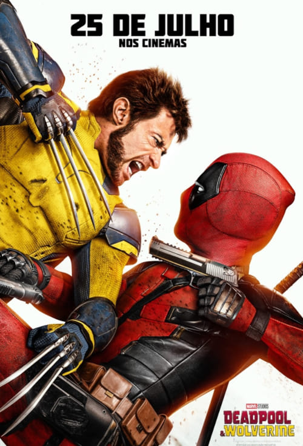

A Marvel Studios apresenta seu erro mais significativo até agora – Deadpool & Wolverine. Um apático Wade Wilson trabalha duro na vida civil. Seus dias como mercenário moralmente flexível, Deadpool, ficaram para trás. Quando seu planeta enfrenta uma ameaça, Wade deve relutantemente vestir-se novamente com um ainda mais relutante... relutante? Mais relutante? Ele deve convencer um Wolverine relutante em... Po**a. As sinopses são tão estúpidas.
Mais informações